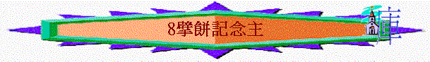

教師版
經文 ： 路 22：14-20 、 林前 11：23-26
教員本引言：
擘餅的要求不是來自人，乃是主耶穌親自的吩咐，並是主在離世前所親自設立的，而中心的意思是記念主自己。既是主的命令；就不能憑我們的愛好來定規這聚會的價值及參與否。Ａ）擘餅的名稱
今天在不同的教會中，對此聚會有不同的名稱。
1)聖餐
是由天主教遺傳，認為經神甫的祝福後，餅與杯就成為聖體，吃後使人得著功德，這與真理不合，因這兩樣（餅與杯）僅為表記之物，是沒有神秘的能力，吃後不會使人加增功w，相反，人若不分辨而吃則是得罪主，故此我們不太喜歡稱此聚會作聖餐A為的是免使人有誤會。2)主的晚餐/主的筵席：
從聖經上的名字取用過來。3)擘餅聚會或擘餅記念主聚會：
從實質上的意義而命名。其實名稱不是最重要，人按真理而行才是最重要，我們教會選取擘餅記念主聚會或簡稱擘餅聚會，目的是不想人將此聚會神秘化；或誤以為參加此聚會就比別的肢體更好更屬
靈。
Ｂ）擘餅的意義
1)記念主（
路 22：19、林前 11：24）擘餅不是一個儀式，乃是有屬靈的含意，參與其中使我們得著屬靈的益處。若我們不認識真理，我們很易在屬靈的事上失落，主用擘餅（聚會）來使我們的心靈常常得著更新，要知我們的天性是善忘的，就是重要的事也因時間的緣故而淡忘，擘餅使我們透過記念主而挑旺我們對主的愛。
a)表明主的死
藉兩件表記的物（餅與杯）顯出這事實。
i)一個餅：
主說餅是表明祂為我們捨去祂自己的身體。ii)一個杯：
主說杯中的葡萄汁是立約的血，流出來為要叫眾人的罪得赦免。餅與杯是同放在桌子上，但卻是分開的，這是表明死，因身體與血分開就必定死。主是要我們注意到祂為我們死的事實，因為主若不死，我們就無法得著救恩，而主的死就在神的面前代我們付了罪的代價，並將我們從魔鬼的手下釋放出來。
ｂ）直等祂來
主不是叫我們單單回想祂的死，若只是回想主的死，則叫人感到沒盼望。主更是叫我們向前看到祂帶給我們那榮耀無比的指望，就是主應許畯昅８|再來並接我們到天父的家，擘餅是使我們可以重新溫習我們所得的指望，免得我們在世上被動搖了。
２）肢體的見證（林前 10：16）
「我們所祝福的杯，豈不是基督的血的交通麼？我們所擘開的那餅，豈不是基督的身體 的交通麼？」 林前 10：16 原文直譯
從經文的原意看來，擘餅記念主就是與眾聖徒在主的桌子前交通，在交通中記念主及敬拜主，所以我們要知道在擘餅中是要與眾聖徒一起敬拜主及記念主，故此我們需要與人同心的記念主。
a)一個餅：
不是很多的餅，這告訴我們不應分門別類，因為身體只有一個，而我們在主裏同為一個身體上的肢體；我們同有一位主，同有一個指望。b)一個杯：
告訴我們主先為我們喝盡了苦杯，而留下福杯給我們。這杯就是那恩典的約，成為我們滿溢的福份，所以我們在擘餅中是用一個杯，見證我們一同在這約上蒙恩，並且恩典的源頭也只有一個\f7 ──就是我們的主。
Ｃ)擘餅的操練
聚會的重點是記念主自己，故在此聚會中不應有其他的內容，應環繞主來敬拜主，並等候主的再來。
1)詩歌的頌讚：
應直接關乎主自己的詩歌，或是述說主的一生，或是述說主的受苦，或述說主的所是（即是主的特性），其他不合用的詩歌應不唱，不論是有多大的屬靈的造就。2)禱告的敬拜：
禱告是根據內心對主的感動，而這禱告是敬拜及感恩的禱告，故此祈求的禱告在此聚會是不合宜的。3)交通的話語：
是高舉主及環繞主的分享，是能使眾聖徒都有益處的分享，使人對主有更深的體會，這可以是讀經或靈修時對主的體會，或生活上對主愛的體會。此外，不應作長篇大論的分享。4)衷心的默想：
有時在擘餅中會有安靜的時刻，但我們不可讓心思游蕩，應在此時思想主的恩典及再次默想主所成就的救恩。5)祝謝的原則
a)祝謝的時間：
是在眾人的敬拜達到最高的時候，勿在聚會時間將盡才作。b)祝謝的人選：
按屬靈的次序來定斷，由弟兄來祝謝，若沒有弟兄的時候，可由姊妹來祝謝。而年幼的弟兄應讓年長的弟兄祝謝，若年長的弟兄沒有主的感動，年幼的又有主的感動，那年幼的弟兄就應起來祝謝。c)祝謝的事項：
先為餅祝謝，後為杯祝謝，並在餅與杯的祝謝間不宜再有分享，因不恰當的分享；會使會眾的心思受到影響，以致記念主的心偏差了。而在吃餅飲杯後，可以一同唱讚美詩或交通，若是沒有就可以安靜的默禱。
d)平常的操練：
擘餅聚會的好與否，是與我們平常的操練有關，記念主不應是一星期只作一次，應是天天對主有思念，到聚會時與眾肢體一同分享及敬拜主。
Ｄ）混亂的懲治（林前 11：27-31）
擘餅記念主是一件嚴肅的事情，肢體不可以存不敬虔的心或輕率的心到來擘餅飲杯，因這是干犯主的身主的血，即以主所作的為平常或輕忽主的工作，這是得罪主的。或有人說不見得主今天是如此的嚴厲，要留意主今天或沒有立刻顯明懲治，但將來到主面前必受主的審問。故此，每次到來擘餅，須有一個醒察的心，要先認罪自潔及重整自己與主的關係，若自己真的勝不過，仍想參與聚會，讓主的愛重新來激勵我們，但不可擘餅，免得受主的責備。
Ｅ）參與及停止的準則
教會在擘餅的事上必須要嚴謹的看待，不可以隨便，因人若在這聚會上存有不準確的心是會得罪主及受主的審問。
1)在我們教會中，必須是已受浸的肢體才可以擘餅，這樣作法是要使參加聚會的肢體基本上是對主有心及認真的，人若對主的命令受浸是其中的一件掉以輕心，怎能得主的喜悅呢？
2)若有肢體犯罪而不肯悔改，教會便會停止他或她的擘餅資格，直到他(她)真心悔改及離棄罪惡。
3)從別處教會到來的基督徒，若要參加擘餅聚會，需先要與教會的負責人（傳道人）交通，經允許,可以擘餅，這作法是要令肢體持有正確的心態參加擘餅聚會，可以得主的喜悅及祝福，並使聚會蒙 神悅納。
學生版
經文 ： 路 22：14-20 、 林前 11：23-26
A）擘餅的名稱
我們教會愛稱此聚會為「擘餅聚會」「擘餅記念主聚會」或，這是從實質上的意義而命名；另方面不想給人有錯誤的理解。其實名稱不是最重要，人按真理而行才是最重要。
B）擘餅的意義
1）記念主（
路 22：19、林前 11：24）a)表明主的死
i)一個餅：
主說是祂為我們捨去祂自己的身體。ii)一個杯：
主說杯中的葡萄汁是立約的血，流出來為要叫眾人的罪得赦免。而餅與杯是同放在桌子上，但卻是分開
的，是表明死，因身體與血分開ｂ）直等祂來
２）肢體的見證（林前 10：16）
a)一個餅：
不是很多的餅，這告訴我們不應分門別類，因為身體只有一個，而我們在主裏同為一個身體上的肢體；我們同有一位主，同有一個指望。b)一個杯：
告訴我們主先為我們喝盡了苦杯，而留下福杯給我們。這杯就是那恩典的約，成為我們滿溢的福份，所以我們在擘餅中是用一個杯，見證我們一同在這約上蒙恩，並且恩典的源頭也只有一個\f7 ──就是我們的主。
Ｃ)擘餅的操練
聚會的重點是記念主自己，故在此聚會中不應有其他的內容，應環繞主來敬拜主，並等候主的再來。
1)詩歌的頌讚
2)禱告的敬拜
3)交通的話語
4)衷心的默想
5)祝謝的原則
a)祝謝的時間：
是在眾人的敬拜達到最高的時候，勿在聚會時間將盡才作。b)祝謝的人選：
按屬靈的次序來定斷，由弟兄來祝謝，若沒有弟兄的時候，可由姊妹來祝謝。而年幼的弟兄應讓年長的弟兄祝謝，若年長的弟兄沒有主的感動，年幼的又有主的感動，那年幼的弟兄就應起來祝謝。c)祝謝的事項：
先為餅祝謝，後為杯祝謝，並在餅與杯的祝謝間不宜再有分享，因不恰當的分享；會使會眾的心思受到影響，以致記念主的心偏差了。而在吃餅飲杯後，可以一同唱讚美詩或交通，若是沒有就可以安靜的默禱。
d)平常的操練：
擘餅聚會的好與否，是與我們平常的操練有關，記念主不應是一星期只作一次，應是天天對主有思念，到聚會時與眾肢體一同分享及敬拜主。
Ｄ）混亂的懲治（林前 11：27-31）
擘餅記念主是一件嚴肅的事情，肢體不可以存不敬虔的心或輕率的心到來擘餅飲杯，因這是干犯主的身主的血，即以主所作的為平常或輕忽主的工作，這是得罪主的。或有人說不見得主今天是如此的嚴厲，要留意主今天或沒有立刻顯明懲治，但將來到主面前必受主的審問。故此，每次到來擘餅，須有一個醒察的心，要先認罪自潔及重整自己與主的關係，若自己真的勝不過，仍想參與聚會，讓主的愛重新來激勵我們，但不可擘餅，免得受主的責備。
Ｅ）參與及停止的準則
教會在擘餅的事上必須要嚴謹的看待，不可以隨便，因人若在這聚會上存有不準確的心是會得罪主及受主的審問。
1)在我們教會中，必須是已受浸的肢體才可以擘餅，這樣作法是要使參加聚會的肢體基本上是對主有心及認真的，人若對主的命令受浸是其中的一件掉以輕心，怎能得主的喜悅呢？
2)若有肢體犯罪而不肯悔改，教會便會停止他或她的擘餅資格，直到他(她)真心悔改及離棄罪惡。
3)從別處教會到來的基督徒，若要參加擘餅聚會，需先要與教會的負責人（傳道人）交通，經允許,可以擘餅，這作法是要令肢體持有正確的心態參加擘餅聚會，可以得主的喜悅及祝福，並使聚會蒙 神悅納。